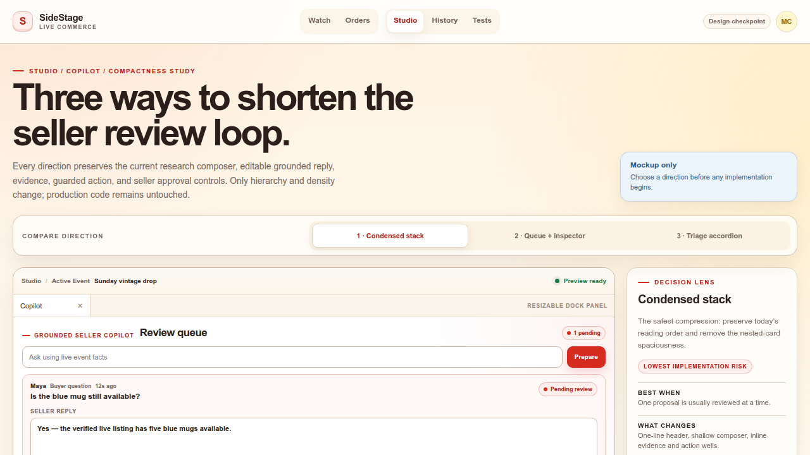
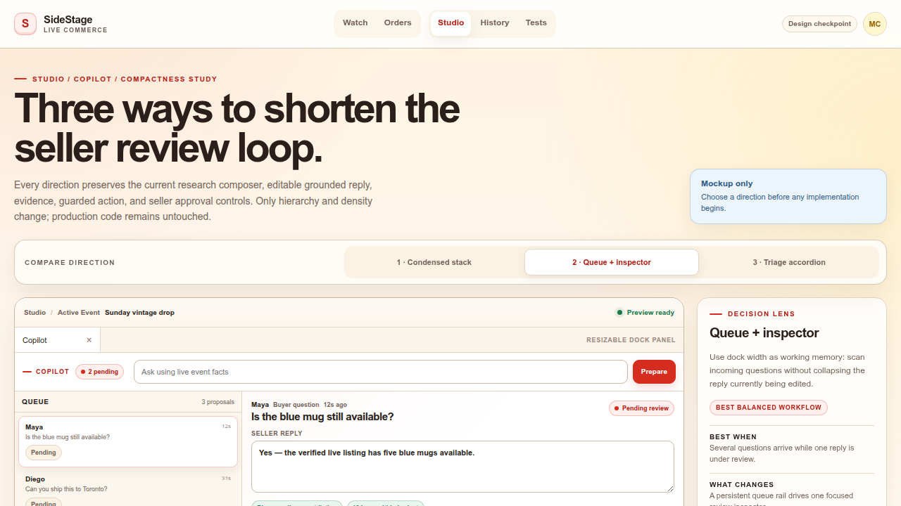
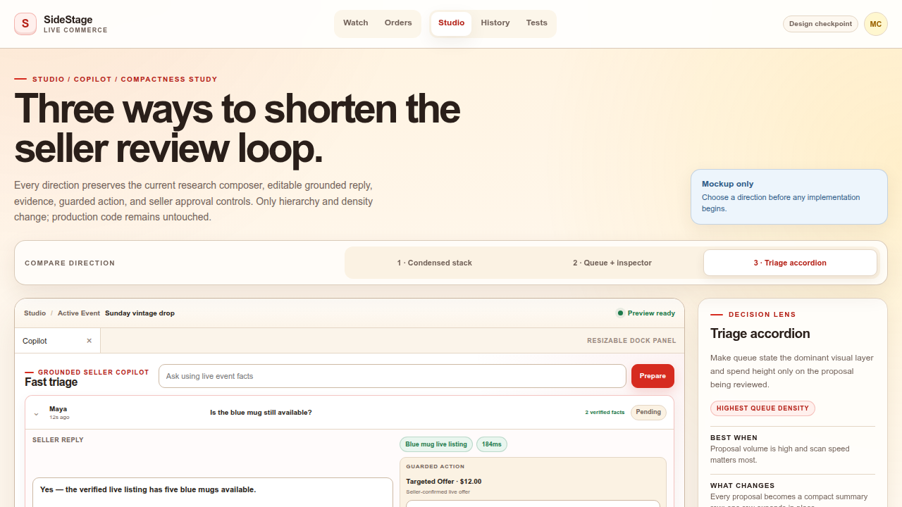

1
Condensed stack
Lowest-risk compression. Keeps the current reading order while tightening the header, composer, evidence, and action surfaces.

All three verified desktop concepts on one canvas. Select an image to open its full-resolution capture, or use the interactive comparison for the working controls.
Lowest-risk compression. Keeps the current reading order while tightening the header, composer, evidence, and action surfaces.

Uses horizontal space for faster scanning: proposals stay in a compact rail while the selected reply opens in a dedicated editor.

The densest multi-proposal view. Queue rows stay compact and only one complete review surface expands at a time.
